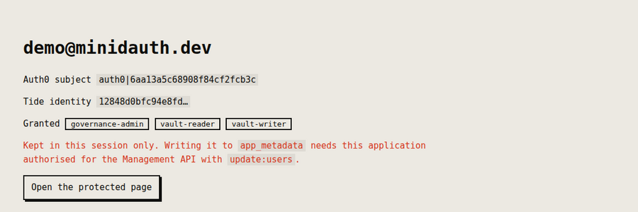

Integrations
Keep roles out of your auth provider's token
Every major auth provider lets you put your own data into the token it issues. Supabase copies
app_metadata into the access token, Clerk can add metadata to its session token,
an Auth0 Action can add claims, and Cognito has its Pre Token Generation trigger. Putting a
user's roles there is one of the most common things people use those features for, and for a
lot of apps it's the right call. When we wired minidauth into each of these providers, every
example ended up keeping roles out of the token on purpose, and it's worth explaining why.
Who gets to decide what the token says
The provider signs the token on behalf of your project, which means whatever your project can write into it, your project can write into anyone's. If your app is supposed to be the authority on who holds which role, that's fine. It isn't fine when the whole point is that no single party should be able to hand out access by itself, and that includes your own app and anyone with a login to its dashboard.
So in every example the token only says who the user is. Roles come from a grant record the app can read but can't change, which only updates once several admins have approved the change and the Tide network has signed it. The easiest way to see the difference is to try a few things that happen in real life:
Where the role comes from
The app reads roles from
What happens
AllowedAllowed from the user's next sign-in. One person with dashboard access was enough to grant it.
What goes in the token instead
Enough to identify the user, plus a link to their Tide identity (a value called the vuid), kept in a field the user can't edit:
| Provider | Where the link lives |
|---|---|
| Supabase | app_metadata.tide_vuid, written with the service role key |
| Clerk | privateMetadata.tideVuid |
| Auth0 | app_metadata.tide_vuid |
| Cognito | custom:tide_vuid |
| Better Auth | a tideVuid column with input: false |
The one rule for choosing the field is that the user mustn't be able to change it. Supabase's
user_metadata and Clerk's public metadata can both be written from the browser,
so they're the wrong place. On Cognito, if you do use a Pre Token Generation trigger, have it
copy the vuid and nothing else.
Asking for roles on every request
The protected route in each example asks minidauth what the user holds each time, instead of trusting whatever the token says:
// the vuid comes from the field in the table above
const roles = await minidauth.rolesFor(user.tideVuid);
if (!roles.includes("vault-reader")) return res.status(403).end();A side effect we ended up liking is that revoking a role works on the next request, instead of whenever the user's token happens to expire. It also means nothing anyone changes in the provider's dashboard affects who can read, since the provider was never asked.

Things that caught us out, provider by provider
Supabase
Because app_metadata is copied into the access token when it's issued, a token
from before the user linked their Tide identity doesn't have the vuid in it. Rather than
pretend the token refreshed, the example says so and asks the user to sign in again, which
only takes a few seconds.
Clerk
The Tide sign-in comes back to your app through a cross-site navigation, and on a Clerk
development instance authenticateRequest can't work out who the caller is on that
request. The example gets around it by setting its own short-lived httpOnly,
SameSite=Lax cookie when linking starts and reading it on the way back. We'd keep
that in production too, since it doesn't depend on the provider at all.
Auth0
Saving the vuid to app_metadata needs the application authorised for the
Management API with the update:users scope, and it lives under Client Access
(machine to machine), not User-delegated Access. We missed it ourselves. The screenshot below
is from our own recorded run, where the link only lasted for the session because the scope
wasn't there yet:

Cognito
The example's setup script creates the user pool with a tide_vuid attribute, the
app client and the hosted UI domain, and npm run teardown deletes them again, so
you can try it without leaving anything behind in your AWS account.
When it's worth the extra request
If your app really is the authority on roles, keep them in the token. It's simpler and it saves a round trip. Reading them from a grant record starts paying off when the data behind a role is sensitive enough that you don't want any one person or system to be able to grant access, which is the situation minidauth was built for.
Each provider has its own page with the full setup: Supabase, Clerk, Auth0, Cognito and Better Auth. If yours isn't on the list, ask in the Discord and we'll work it out.